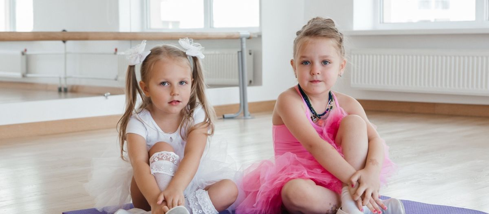

Монтессори-сад: что это такое и как устроен день ребёнка


Слово «Монтессори» есть на сайте почти каждого частного сада, и почти нигде не объясняют, что это значит на практике. Ниже без теории: как выглядит группа, чем занят ребёнок с девяти до пяти, что делает воспитатель, если он «не учит», и чем такой сад отличается от обычного к моменту выпуска в школу.

- Монтессори это среда, в которой ребёнок сам выбирает занятие, а педагог показывает, как пользоваться материалом, и отходит.
- Группы разновозрастные: 1,5-3 года и 3-6 лет. Старшие учат младших, младшие тянутся за старшими.
- Главный результат к школе: ребёнок умеет сосредоточиться, довести дело до конца и не боится ошибок.
01Откуда взялся метод
Мария Монтессори по образованию врач, педагогикой она занялась позже. В начале прошлого века она работала с детьми, которых считали необучаемыми, и заметила: если дать ребёнку подходящий по возрасту материал и не мешать, он учится сам, причём с удовольствием. Дальше она перенесла это наблюдение на обычных детей и построила систему. Её главный принцип звучит как просьба ребёнка к взрослому: «Помоги мне сделать это самому».
За сто с лишним лет метод обкатали в десятках стран. Спорить о нём продолжают, и мы честно разберём слабые места ниже. Но в дошкольном возрасте он работает лучше большинства альтернатив, и вот почему.
02Три опоры метода
Подготовленная среда
В Монтессори-группе нет учительского стола и рядов стульев. Есть зоны: практическая жизнь, сенсорика, математика, язык, космос (так в методе называют естествознание). В каждой зоне на низких открытых полках стоят материалы, и все они доступны ребёнку без помощи взрослого.
Материалы устроены так, что ребёнок сам видит ошибку. Розовая башня из кубиков разного размера не встанет, если поставить кубики в неправильном порядке. Цилиндры-вкладыши не войдут в чужие отверстия. Ребёнок исправляет себя сам, и взрослый ему для этого не нужен.
Свобода выбора в границах
Ребёнок сам решает, чем заняться и как долго. Хочет полчаса переливать воду из кувшина в кувшин, значит, ему это сейчас нужно: он тренирует координацию и концентрацию. Границы при этом жёсткие: материал берут с полки и возвращают на место, не мешают тому, кто занят, не ломают чужую работу.
Педагог как наблюдатель
Воспитатель в Монтессори-группе называется гидом. Он не ведёт занятие для всех. Он смотрит, к чему тянется конкретный ребёнок, показывает, как работать с материалом, и отходит. Вмешивается, когда ребёнок просит помощи или когда нарушены границы. Со стороны это выглядит так, будто взрослый ничего не делает. На самом деле он ведёт двадцать индивидуальных программ одновременно.
03Как устроен день
Расписание в саду ONE! на примере группы 3-6 лет. Время примерное, в каждом кампусе есть свои особенности.
| Время | Что происходит |
|---|---|
| 8:00-9:00 | Приход, свободная работа с материалами. Ребёнок сам выбирает, с чего начать день. |
| 9:00-9:20 | Круг: приветствие, календарь, короткая презентация нового материала. |
| 9:20-11:00 | Большой рабочий цикл. Полтора часа непрерывной свободной работы. Это ядро метода: за это время ребёнок успевает погрузиться в занятие. |
| 11:00-12:30 | Прогулка. |
| 12:30-13:00 | Обед. Дети накрывают и убирают сами, это тоже часть практической жизни. |
| 13:00-15:00 | Сон. |
| 15:00-15:30 | Полдник. |
| 15:30-17:00 | Второй рабочий цикл, английский в среде, творческие мастерские. |
| 17:00-19:00 | Свободная игра, прогулка, уход домой. |
Обратите внимание на утренний цикл. В обычном саду занятия идут по двадцать минут с переключениями: рисование, потом музыка, потом математика. В Монтессори полтора часа никто ребёнка не дёргает. Именно это формирует способность концентрироваться, которой потом так не хватает в школе.

04Почему группы разновозрастные
В Монтессори-саду дети трёх, четырёх и пяти лет ходят в одну группу. Родителей это иногда смущает: не будет ли старшим скучно, а младшим страшно?
На практике получается наоборот. Пятилетний ребёнок, объясняя трёхлетнему, как строить башню, закрепляет навык лучше, чем при любом повторении. Трёхлетний видит, что умеют старшие, и тянется за ними без подсказки взрослого. Группа становится маленьким обществом, где у каждого есть роль. В однородной по возрасту группе такого не получается: все умеют примерно одно и то же, и учиться друг у друга нечему.
05Чему ребёнок научится к школе
Список того, что видят педагоги начальной школы ONE! у выпускников Монтессори-групп.
Ребёнок может двадцать-тридцать минут заниматься одним делом, не отвлекаясь. Для первоклассника это редкость.
Одевается, убирает за собой, накрывает на стол, режет мягкие овощи ножом. Не потому что заставили, а потому что это часть среды.
Материалы с самоконтролем учат: ошибка это информация, повод для стыда здесь отсутствует. Такие дети спокойно переделывают.
Через бусины и штанги ребёнок к шести годам понимает десятичную систему и четыре действия на уровне ощущений, без заученных правил.
Переливания, пересыпания, застёжки, шнуровки. К школе рука готова к письму без прописей.
Ребёнок, который три года сам решал, чем заняться, в школе быстрее понимает, что ему интересно.
06Слабые места метода
Мы говорим о них на экскурсии, скажем и здесь.
Ребёнок, привыкший выбирать занятие, может первое время тяжело воспринимать урок, где все делают одно и то же по звонку. В ONE! это снимается тем, что сады и школы работают по единой логике, и переход в первый класс проходит внутри одной среды.
Классический метод делает упор на индивидуальную работу. Сюжетно-ролевых игр и соревнований в нём меньше, чем в обычном саду. Мы добавляем их во второй половине дня: театр, спорт, групповые проекты.
Метод держится на гиде. Если он формально прошёл курсы и не понимает сути, группа превращается в обычный сад с дорогими игрушками. Спрашивайте про подготовку педагогов и смотрите на то, как взрослый ведёт себя в группе.
Исследования показывают преимущества Монтессори-детей в концентрации и самостоятельности, но разница в академических результатах к средней школе сглаживается. Мы выбираем метод за то, что он даёт в дошкольном возрасте, и не обещаем, что он гарантирует медаль.
Монтессори-среда работает во всех трёх наших садах с полутора лет. Педагоги проходят подготовку по методу до выхода в группу. Английский встроен в среду: часть презентаций материалов идёт на английском, и ребёнок начинает понимать язык через действие, без карточек и заучивания. Подробнее о том, как это работает, в статье про билингвальный сад.
07Частые вопросы
Чаще всего именно таким детям метод подходит лучше всего. В среде много движения: материалы носят, переливают, пересыпают. Никто не требует сидеть.
Это значит, что он отрабатывает навык, который ему сейчас важен. Гид наблюдает и в нужный момент предлагает следующий по сложности материал. Насильно не переключает.
Мария Монтессори осторожно относилась к вымыслу для детей до шести лет. Современные Монтессори-сады, включая наши, читают книги, ставят спектакли и рисуют. Ограничение касается только рабочего цикла с материалами.
В ONE! с полутора лет в группу 1,5-3, с трёх лет в группу 3-6. О признаках готовности к саду написали отдельно.
08Что дальше
Лучший способ понять метод: увидеть рабочий цикл своими глазами. Приходите на экскурсию утром, в 9:30-10:30, когда группа в работе. Телефон +7 (495) 152-22-21.